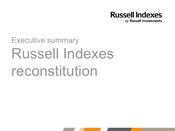

RUSSELL INDEX RECONSTITUTION
It's all about the right balance.
Russell's Annual Index Reconstitution is a complete rebuilding of the global universe of investable stocks, and a global relative analysis against all other stocks to assign them to, and reweight them within, the appropriate indexes (relative size, style, region and country).
More than $20 billion changed hands on reconstitution day in 2012 Russell's annual reconstitution has become a much anticipated, often record-breaking market event. Russell's June 23, 2012 reconstitution resulted in the trade of roughly 886 million shares during NYSE's closing-cross auction (a typical closing cross in 2012 was between 150 – 200 million shares).1
Reconstitution is fundamental to Russell Index methodology because we believe indexes should represent the investable opportunity set. Because markets continually change, an unbiased process is required to capture changes in every segment. Reconstitution keeps midcap and small cap in check. Reconstitution prevents unintended style bias from distorting asset allocation or portfolio results. Our ongoing process, which includes quarterly IPO additons and daily and monthly adjustments, reinforces this balance.
Index changes to look for at reconstitution include:
- Market capitalization ranges – Large, small, etc.
- Stock inclusion – Up, down or out
- Changes in stock exclusion – Investability screens
- Changes in developed and emerging market status
- Shifts in growth/value and defensive/dynamic
Please revisit this site often as we post new information on Russell's annual index reconstitution, and keep an eye on our Twitter feed for regular updates. It's coming!
- 
-
WANT TO KNOW MORE?
Download a summary highlighting the facts about
Index Reconstitution.
1Source: “An Annual Tradition: Closing Frenzy,” The Wall Street Journal, 23 June 2012, B4.
Days
until Russell Index ReconstitutionView senior research analyst, Matt Lystra provide a brief overview of how reconstitution is defined, why it's important, and why Greece is being reclassified in Russell's Global Indexes.